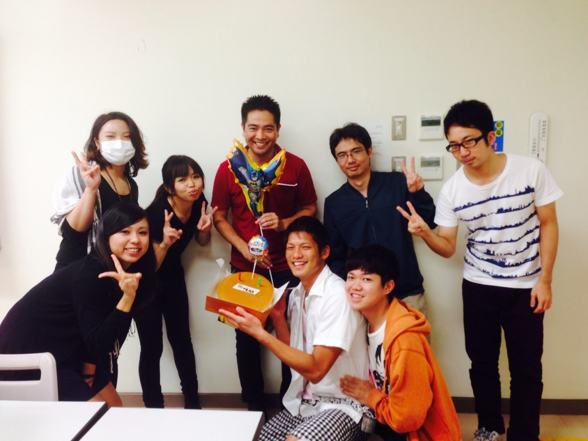

平良ゼミ
平良 直之（たいら なおゆき）教授
専門分野／意思決定論・知的情報処理
担当科目／意思決定論･ウェブプログラミング･ウェブデザイン演習
ゼミ紹介
ゼミでは、最初，システム開発やアプリ開発について主に学びます。
３年次以降の個別研究では，各自が関心を持っていることを中心に自由にテーマを決めて取り組んでいます。
先生の専門は意思決定ですが、取り組んでいる人は少ないです（笑）。
また、企業との合同プロジェクトに参加する機会もあり、学外でも貴重な経験をすることができます。
他にも、東村セミナーハウスでの合宿や学祭参加、ゼミ会など楽しいイベントも多いです。
そこには同学年だけでなく上級生や先生も参加するので、隔たりなく仲良くなれます。
上級生や卒業生との交流が頻繁にあるので、先生だけでなくゼミの先輩も後輩の面倒をみてくれます。
卒業論文
卒業生
天久 楓「美文字アプリケーションの開発」
上間 康史「高校生を対象とした簿記アプリケーションの開発」
榮門 まなみ「家飲み支援アプリ“かんぱい！”」
大嶺 沙也加「アルティメット練習支援アプリ」
久貝 文哉「ゆいレール利用者支援アプリ〜ひとりでものれーる〜」
島袋 彰人「サウンドアプリケーションの開発」
下門 あかね「友達内で行う飲食店情報共有アプリ」
徳原 渓「コーヒー飲用支援アプリの構築」
仲間 綾子「満足できる！韓国旅行支援アプリ」
辺土名 洋幸「散歩支援アプリケーション開発」
遊佐 大一「筋力トレーニング支援アプリの開発」
與那覇 勇太「ダイビングログブックアプリの開発」
４年次
伊良波 朝敬「サークル支援アプリ」
上地 夏生「学習意欲支援アプリ」
江越 郁弥「沖縄ドライブ支援アプリ」
川上 凌「在庫管理システム」
岸本 冷子「買い物支援アプリ」
久高 杏奈「アプリ売上分析および売れるアプリ制作」
知名 遥「中国語支援アプリ」
知念 樹「営業支援アプリ」
津波古 盛勝「座間味観光アプリ」
東門 麻美「沖縄方言支援アプリ」
渡久地 遥「シフト管理システム・アプリ」
名嘉 柚妃「教科書リユースアプリ」
宮里 遥香「コーディネート支援アプリ」